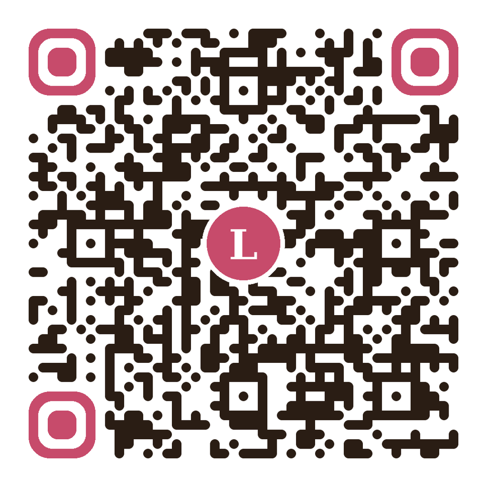

Código QR del menú
La Bella Lola

Se imprime en mesas, mostrador y volantes. Con la cámara del celular abre su menú digital con fotos y pedido por WhatsApp.
Muestra preparada por LKM'r CompanyCódigo QR del menú

Se imprime en mesas, mostrador y volantes. Con la cámara del celular abre su menú digital con fotos y pedido por WhatsApp.
Muestra preparada por LKM'r Company